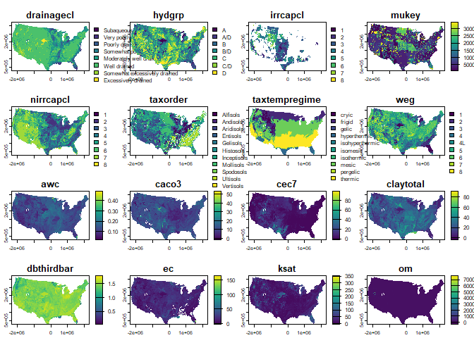

The goal of {rdshub} is to provide experimental functions for interacting with public-facing ‘Dynamic Soils Hub’ tools and APIs.
Currently the following functions are available:
[!NOTE]
Contents of this package may change at any time based on server-side changes and new approaches. Well-polished functions may be moved to other packages eventually.
Installation
You can install the development version of rdshub from GitHub with:
# install.packages("remotes")
remotes::install_github("brownag/rdshub")Example
This is a basic example demonstrating how to obtain variables with top depth 0 cm, and bottom depth 0 cm and 200 cm.
The result includes all “site” level variables that have a "domcond" (dominant condition) aggregation, as well as all "wtdavg" (depth weighted average) variables for interval [0,200]
library(rdshub)
library(terra)
#> Warning: package 'terra' was built under R version 4.5.1
#> terra 1.8.56
x <- dsh_soil_properties(
# variables = c("claytotal", "sandtotal", "silttotal", "drainagecl"),
top_depth = 0,
bottom_depth = c(0, 200),
aggregations = c("wtdavg", "domcond"),
resolutions = 900
)
terra::sources(x)
#> [1] "/vsicurl/https://s3-fpac-nrcs-dshub-public.s3.us-east-1.amazonaws.com/SoilProperties/conus_5070_conus_900_1_000_000_drainagecl_domcond.tif"
#> [2] "/vsicurl/https://s3-fpac-nrcs-dshub-public.s3.us-east-1.amazonaws.com/SoilProperties/conus_5070_conus_900_1_000_000_hydgrp_domcond.tif"
#> [3] "/vsicurl/https://s3-fpac-nrcs-dshub-public.s3.us-east-1.amazonaws.com/SoilProperties/conus_5070_conus_900_1_000_000_irrcapcl_domcond.tif"
#> [4] "/vsicurl/https://s3-fpac-nrcs-dshub-public.s3.us-east-1.amazonaws.com/SoilProperties/conus_5070_conus_900_1_000_000_mukey_domcond.tif"
#> [5] "/vsicurl/https://s3-fpac-nrcs-dshub-public.s3.us-east-1.amazonaws.com/SoilProperties/conus_5070_conus_900_1_000_000_nirrcapcl_domcond.tif"
#> [6] "/vsicurl/https://s3-fpac-nrcs-dshub-public.s3.us-east-1.amazonaws.com/SoilProperties/conus_5070_conus_900_1_000_000_taxorder_domcond.tif"
#> [7] "/vsicurl/https://s3-fpac-nrcs-dshub-public.s3.us-east-1.amazonaws.com/SoilProperties/conus_5070_conus_900_1_000_000_taxtempregime_domcond.tif"
#> [8] "/vsicurl/https://s3-fpac-nrcs-dshub-public.s3.us-east-1.amazonaws.com/SoilProperties/conus_5070_conus_900_1_000_000_weg_domcond.tif"
#> [9] "/vsicurl/https://s3-fpac-nrcs-dshub-public.s3.us-east-1.amazonaws.com/SoilProperties/conus_5070_conus_900_1_000_200_awc_wtdavg.tif"
#> [10] "/vsicurl/https://s3-fpac-nrcs-dshub-public.s3.us-east-1.amazonaws.com/SoilProperties/conus_5070_conus_900_1_000_200_caco3_wtdavg.tif"
#> [11] "/vsicurl/https://s3-fpac-nrcs-dshub-public.s3.us-east-1.amazonaws.com/SoilProperties/conus_5070_conus_900_1_000_200_cec7_wtdavg.tif"
#> [12] "/vsicurl/https://s3-fpac-nrcs-dshub-public.s3.us-east-1.amazonaws.com/SoilProperties/conus_5070_conus_900_1_000_200_claytotal_wtdavg.tif"
#> [13] "/vsicurl/https://s3-fpac-nrcs-dshub-public.s3.us-east-1.amazonaws.com/SoilProperties/conus_5070_conus_900_1_000_200_dbthirdbar_wtdavg.tif"
#> [14] "/vsicurl/https://s3-fpac-nrcs-dshub-public.s3.us-east-1.amazonaws.com/SoilProperties/conus_5070_conus_900_1_000_200_ec_wtdavg.tif"
#> [15] "/vsicurl/https://s3-fpac-nrcs-dshub-public.s3.us-east-1.amazonaws.com/SoilProperties/conus_5070_conus_900_1_000_200_ksat_wtdavg.tif"
#> [16] "/vsicurl/https://s3-fpac-nrcs-dshub-public.s3.us-east-1.amazonaws.com/SoilProperties/conus_5070_conus_900_1_000_200_om_wtdavg.tif"
#> [17] "/vsicurl/https://s3-fpac-nrcs-dshub-public.s3.us-east-1.amazonaws.com/SoilProperties/conus_5070_conus_900_1_000_200_sandtotal_wtdavg.tif"
#> [18] "/vsicurl/https://s3-fpac-nrcs-dshub-public.s3.us-east-1.amazonaws.com/SoilProperties/conus_5070_conus_900_1_000_200_sar_wtdavg.tif"
#> [19] "/vsicurl/https://s3-fpac-nrcs-dshub-public.s3.us-east-1.amazonaws.com/SoilProperties/conus_5070_conus_900_1_000_200_silttotal_wtdavg.tif"
terra::metags(x, layer = 1)
#> layer name value
#> 1 1 aggregation domcond
#> 2 1 bottom 0
#> 3 1 endpoint SoilProperties
#> 4 1 location conus
#> 5 1 territory conus
#> 6 1 top 0
#> 7 1 variable drainagecl
#> 8 1 version 1
vars <- x |>
terra::metags(seq_len(terra::nlyr(x))) |>
subset(name == "variable")
names(x) <- vars$value
terra::plot(x)
#> Warning: [plot] unknown categories in raster values
#> Warning: [plot] unknown categories in raster values
#> Warning: [plot] unknown categories in raster values
#> Warning: [plot] unknown categories in raster values
#> Warning: [plot] unknown categories in raster values
x$sandtotal + x$claytotal + x$silttotal
#> class : SpatRaster
#> size : 3250, 5150, 1 (nrow, ncol, nlyr)
#> resolution : 900, 900 (x, y)
#> extent : -2356125, 2278875, 270045, 3195045 (xmin, xmax, ymin, ymax)
#> coord. ref. : NAD83 / Conus Albers (EPSG:5070)
#> source(s) : memory
#> varname : conus_5070_conus_900_1_000_200_sandtotal_wtdavg
#> name : sandtotal
#> min value : 0.0000
#> max value : 161.5763
#> depth : 100